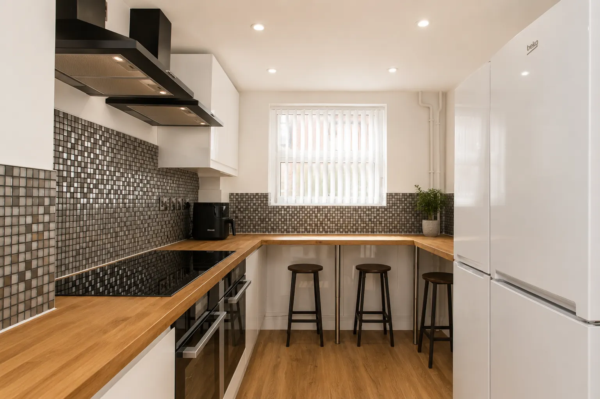

Refurbishment
Kilbourn Street
From stripped-back spaces and major building work to fitted, finished rooms.
View the transformation →Work in context
See real Re-Let work in Nottingham: an extensive rental-property refurbishment and a focused void property turnaround with clearance and deep cleaning.

From stripped-back spaces and major building work to fitted, finished rooms.
View the transformation →
Condition capture, clearance and deep cleaning to move a void property towards its next stage.
See before and after →Send the postcode, photos and target timing for a practical first response.